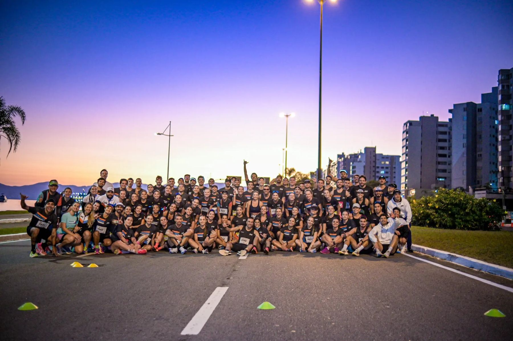

Conte sobre sua rotina
Compartilhe seus objetivos, sua experiência e seus horários. Essas informações orientam o planejamento de corrida, triathlon ou duas modalidades.
Treine na sua cidade com orientação da Endurance On. Você recebe o planejamento individual no aplicativo e mantém contato com o treinador para compartilhar sua rotina, tirar dúvidas e acompanhar o processo.

O acompanhamento começa pelo seu histórico e pela conversa sobre o que você quer treinar. A organização da semana é feita para sua realidade.
Compartilhe seus objetivos, sua experiência e seus horários. Essas informações orientam o planejamento de corrida, triathlon ou duas modalidades.
No TrainingPeaks, você encontra as sessões e as instruções do treinador. A equipe orienta o acesso no início do acompanhamento.
Envie feedbacks sobre os treinos e avise quando sua rotina mudar. Os canais, prazos de resposta e condições de ajustes são combinados com a equipe.
Na assessoria de corrida, o ponto de partida pode ser começar, retomar ou preparar uma prova. No triathlon, o planejamento integra natação, ciclismo e corrida na sua semana. Há também a opção de duas modalidades no catálogo.
O formato online permite acompanhar o planejamento sem participar dos encontros em Florianópolis. Se você quiser conhecer a equipe presencialmente, consulte a programação dos treinos coletivos e as condições do seu plano.
Não. O acompanhamento online é oferecido para quem treina em outras cidades. O planejamento chega pelo aplicativo, e o contato com o treinador é feito pelos canais combinados.
O planejamento considera seu histórico, sua disponibilidade e seu objetivo. As condições de acompanhamento e de ajustes devem ser conferidas no plano escolhido.
O contato direto faz parte do acompanhamento. A equipe combina os canais e o prazo de retorno, incluindo WhatsApp para orientações e feedback. Ajustes devem ser solicitados com antecedência; não há atendimento imediato ou disponibilidade 24 horas.
Consulte os planos online, escolha modalidade, treinador e período e confira os valores atuais. A pré-matrícula permite revisar condições, disponibilidade e seus dados antes do envio.
Consulte os planos, conheça os treinadores e escolha o acompanhamento para o seu momento.